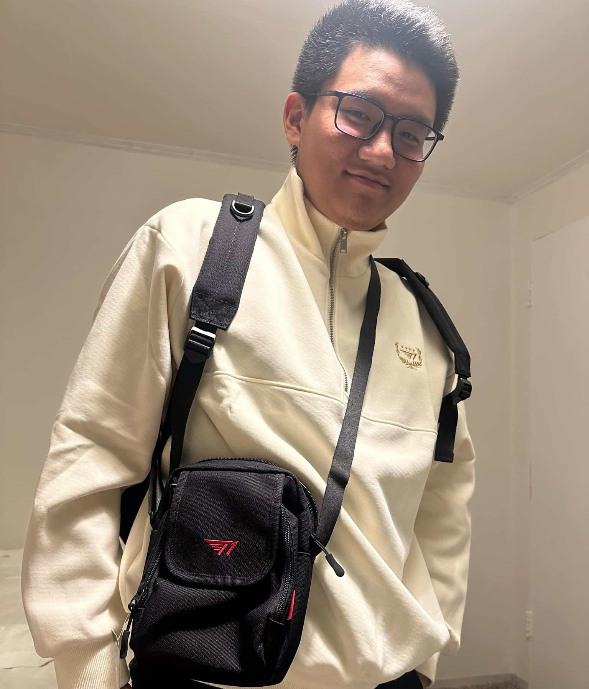

Childhood & Debut
Achievement
Goods
About us
ABOUT US
Meet Đinh Gia Hiển, affectionately known as hikkiman. An outstanding student of NTT School and a proud recipient of NTT's 50th Scholarship, Đinh Gia Hiển has demonstrated exceptional academic prowess and commitment to excellence. When he's not excelling in his studies, you can find him deeply immersed in watching T1 and enjoying the excitement of video gaming. As a professional player for the 12A4 League of Legends roster, Đinh Gia Hiển brings his strategic thinking and passion for gaming to the competitive stage. With a dedication to both learning and gaming, Đinh Gia Hiển embodies a perfect blend of intellectual curiosity and youthful enthusiasm.

Once honored defenders of Shurima against the Void, Aatrox and his brethren would eventually become an even greater threat to Runeterra, and were defeated only by cunning mortal sorcery. But after centuries of imprisonment, Aatrox was the first to find freedom once more, corrupting and transforming those foolish enough to try and wield the magical weapon that contained his essence. Now, with stolen flesh, he walks Runeterra in a brutal approximation of his previous form, seeking an apocalyptic and long overdue vengeance.